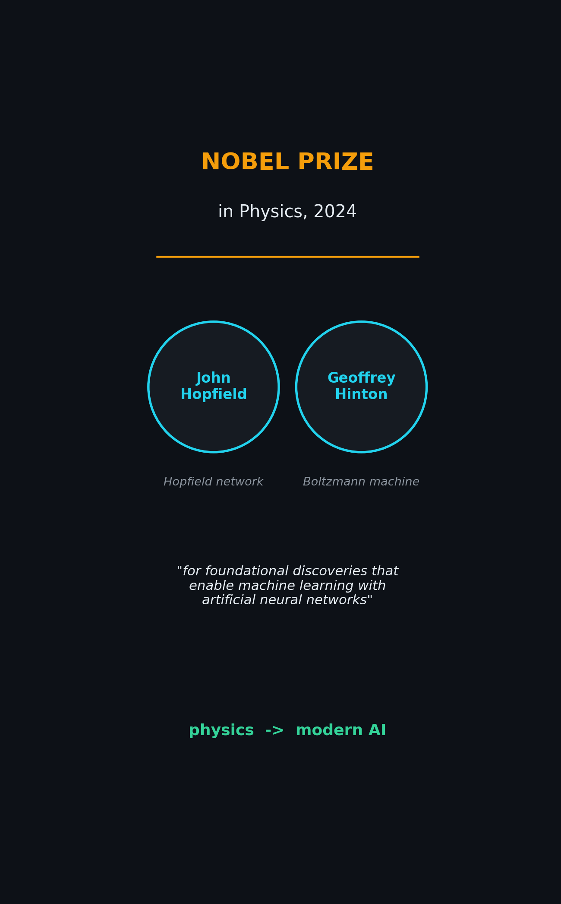
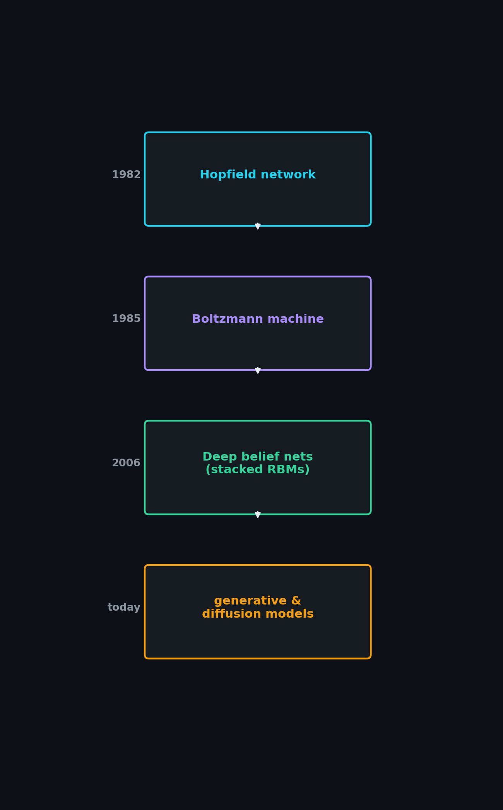

Boltzmann Machines & Energy-Based Models: The Nobel-Prize-Winning Physics Behind Neural Networks

In 2024, the Nobel Prize in Physics went to John Hopfield and Geoffrey Hinton — "for foundational discoveries and inventions that enable machine learning with artificial neural networks." A physics prize, for AI? It turns out the two are deeply connected: the ideas that power modern neural networks came straight from the physics of energy, heat, and how systems settle into their most stable states.
At the heart of it all sits one beautiful concept — the energy-based model.
🎬 Watch the 3-minute explainer (YouTube Short):
▶️ Direct link: youtube.com/shorts/456kN6RKNA8
The Core Idea: An Energy Landscape
An energy-based model assigns every possible state of the system a single number — its energy. Picture a hilly landscape:
- The patterns we want (sensible, data-like states) sit low in the valleys.
- The states we don't want sit high on the hills.
- The system always wants to roll downhill, toward low energy.

Physics gives us the exact rule that links energy to probability — the famous Boltzmann distribution:
$$P(x) \propto e^{-E(x)/T}$$
The probability of a state falls off exponentially as its energy rises. Low energy means high probability. The temperature $T$ controls how much the system explores: hotter means more randomness.
Hopfield Networks: Memory as Valleys
Hopfield's insight, in 1982, was to use this landscape as a memory. He wired neurons together with symmetric connections ($w_{ij} = w_{ji}$) and defined an energy that the network always decreases as it updates.
The trick: shape the landscape so each stored memory becomes its own valley.

Show the network a noisy or partial pattern, and it simply rolls downhill into the nearest valley — recovering the clean memory. This is associative memory, built entirely out of energy.
The Boltzmann Machine
Hinton and colleagues took the next step. A Boltzmann machine is a Hopfield-style network made stochastic: instead of strictly rolling downhill, each neuron turns on or off with a probability set by that same Boltzmann rule.
$$P(\text{neuron} = \text{ON}) = \sigma(\text{input}/T)$$

Two things make this powerful:
- Randomness lets it escape shallow traps and genuinely explore the landscape, rather than getting stuck in the first valley it finds.
- It adds hidden units — neurons representing features you never directly observe — so the network can capture deep, rich structure in the data instead of just memorizing patterns.
Learning: Sculpting the Landscape
How does a Boltzmann machine learn? By reshaping the energy landscape itself, in two phases:
- Positive phase — show it real data and lower the energy around it, digging valleys where the data lives.
- Negative phase — let it "dream," generating its own samples, and raise their energy, flattening the valleys it invented.

Repeat, and the landscape gradually comes to match the world. The Restricted Boltzmann Machine (RBM) — with no connections inside a layer — made this training fast and practical (via contrastive divergence).
Why It Mattered
This wasn't just elegant theory. In 2006, stacking Restricted Boltzmann Machines let Hinton train deep networks for the first time — the spark that reignited deep learning after years in the cold.

And the energy-based view never went away. The idea of defining an energy you minimize still echoes through today's diffusion models and score-based generative methods. Physics gave AI a durable language for probability and structure.
The Takeaway
The Boltzmann machine, in one breath:
- Define an energy over every possible state.
- Prefer the low-energy ones — those are the patterns you want.
- Add randomness so the network can explore.
- Learning = reshaping the landscape to match the data.
It's a Nobel-Prize-winning bridge between physics and intelligence — and a reminder that some of AI's deepest ideas were borrowed from the way the physical world settles into stable states.
This post accompanies our short explainer video. We're brand new to YouTube — if you found this useful, please subscribe and like; it genuinely helps us keep making these. Thanks for reading! 🙏
Cite this post
Auto-generated. Verify for your institution's requirements.